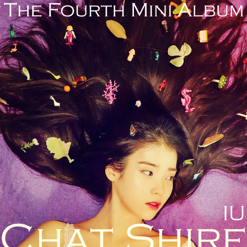

2021년 3월 25일 오후 6시에 발매된 아이유의 정규 5집이다. 직전 앨범과 마찬가지로 아이유가 전곡 작사에 참여하였다.
20대의 마지막에 대해 화려한 ‘인사'를 예고했던 아이유가 봄 내음과 함께 다섯 번째 정규앨범 [LILAC]으로 돌아왔다.
4년 만에 선보이는 정규앨범 [LILAC]은 스무 살의 솔직하고 풋풋한 감성을 담아 발표했던 20대의 첫 앨범 [스무 살의 봄]과는 달리,
지금껏 지나온 20대를 10개의 트랙에 다채로운 시각으로 풀어내 그동안의 성숙해진 감성을 오롯이 담았다.
이번에도 역시 프로듀싱은 물론 작곡 및 전곡 작사에 참여한 아이유는 국내외 다양한 특급 아티스트들과 새로운 협업을 통해 장르에 대한 시도와 완성도 높은 곡들을 선보여 현재 진행형인 아이유의 음악적 진화가 향후 새롭게 맞이할 30대에는 또 어떠한 모습을 보여줄지 기대감도 주고 있다.
또한 이번 앨범에는 국내 최고의 뮤직비디오 프로덕션인 VM프로젝트(Celebrity, Flu), 플립이블(라일락, 에필로그), 써니비주얼(Coin)이 함께 참여하여 각각의 개성 있고 감각적인 영상들과 아이유의 음악이 만나 막강한 시너지를 발휘했다.
앨범명과 함께 타이틀 곡 제목에 사용한 ‘라일락' 꽃의 꽃말은 ‘첫사랑', 그리고 ‘젊은 날의 추억'이다
20대의 첫 페이지부터 마지막 페이지까지 지켜봐 준 모든 이들에게 감사함을 담아 화려하고, 그리고 조금은 쓸쓸하기도 한 아이유만의 인사를 전한다.